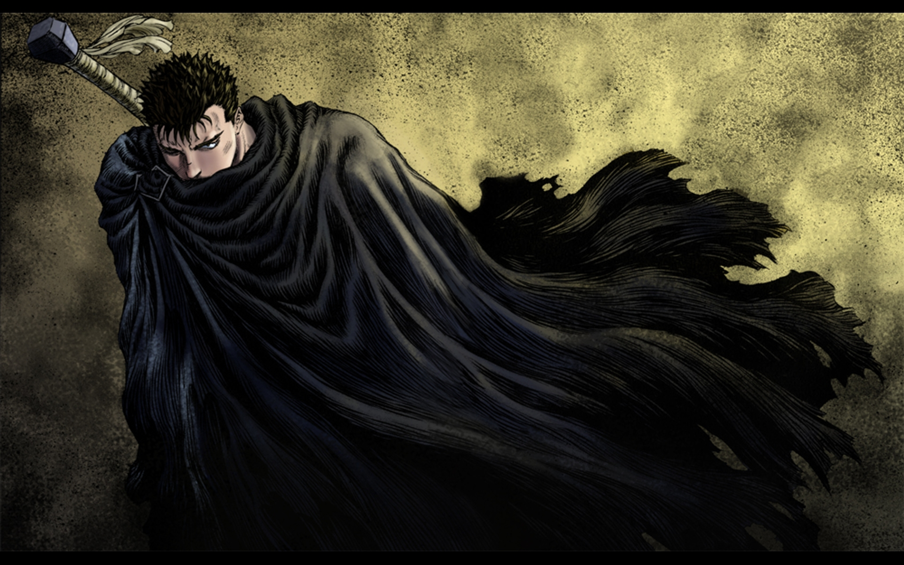
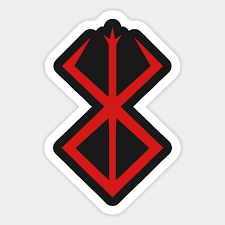
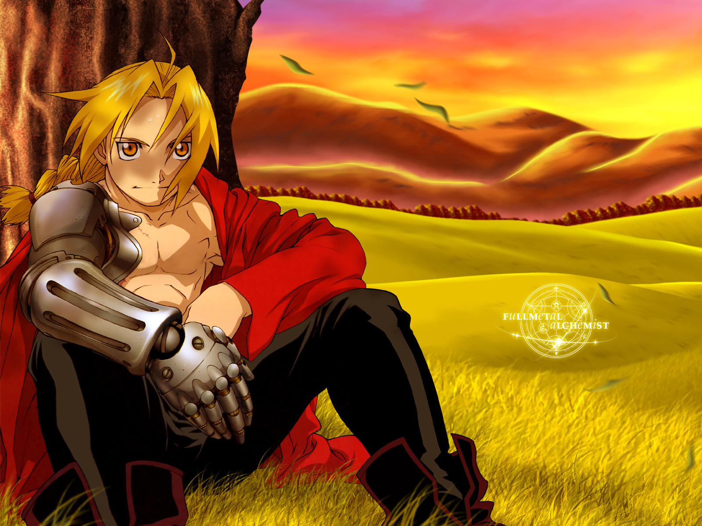
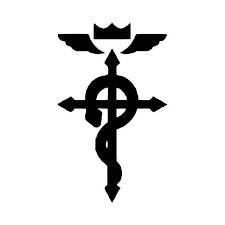
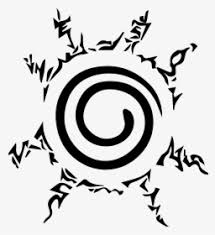

bersek
Guts is a skilled swordsman who joins forces with a mercenary group named 'The Band of the Hawk', lead by the charismatic Griffith, and fights with them as they battle their way into the royal court.
to read the manga click here 

onepiece
One Piece is a Japanese manga series written and illustrated by Eiichiro Oda. It has been serialized in Shueisha's Weekly Shōnen Jump magazine since July 1997, with its individual chapters compiled into 97 tankōbon volumes as of September 2020. The story follows the adventures of Monkey D. Luffy, a boy whose body gained the properties of rubber after unintentionally eating a Devil Fruit. With his crew of pirates, named the Straw Hat Pirates, Luffy explores the Grand Line in search of the world's ultimate treasure known as "One Piece" in order to become the next King of the Pirates. In August 2020, it was announced that One Piece was approaching its final arc.

full metal alchemist
edward and Alphonse Elric are two alchemist brothers searching for the legendary Philosopher's Stone, a powerful object which would allow them to recover their bodies (which were lost in an attempt to bring their mother back to life through alchemy). Born in the village of Resembool from the country of Amestris (アメストリス, Amesutorisu), the two brothers live there with their parents. Their father, Hohenheim, leaves home for unknown reasons and years later, their mother, Trisha Elric, dies of a terminal illness leaving the Elric brothers alone. After their mother's death, Edward becomes determined to bring her back through the use of alchemy, an advanced science in which objects can be created from raw materials. They research Human Transmutation, a forbidden art in which one attempts to create or modify a human being. However, this attempt fails, ultimately resulting in the loss of Edward's left leg and Alphonse's entire body. In a desperate effort to save his brother, Edward sacrifices his right arm to affix Alphonse's soul to a suit of armor. Some days later, an alchemist named Roy Mustang visits the Elric brothers, and he tells Edward to become a member of the State Military of the country to find a way to recover their bodies. After that, Edward's left leg and right arm are replaced with automail, a type of advanced prosthetic limb, created for him by his close family friends Winry Rockbell and her grandmother Pinako. Edward sets out to become a State Alchemist (国家錬金術師, Kokka Renkinjutsushi), an alchemist employed by the State Military of Amestris, which infamously annihilated much of the neighboring country of Ishbal's population in the past decade. Becoming a State Alchemist enables Edward to use the extensive resources available to State Alchemists, but it also turns him into what they call a "dog of the military". His more friendly relationship with Roy Mustang, however, whom he reports to and who recruited him, allows the brothers freedom to search for the Philosopher's Stone as part of Edward's research, as each State Alchemist is expected to independently research new things which may be of use to the State Military of Amestris. The brothers set off in search of the Philosopher's Stone as a means to restore their bodies. Throughout their journey, they meet many antagonists, including those who are willing to do anything to obtain the Philosopher's Stone; Scar, one of the few surviving Ishbalans, who seeks vengeance on the State Alchemists for the destruction of his race; and the homunculi, a group of human-like creatures who carry pieces of the Philosopher's Stone inside themselves, and from it derive the ability to survive almost any harm. As the story progresses, Edward and Alphonse discover the vast expansion of Amestris was the result of the homunculi, who created and secretly control the State Military. The homunculi and much of the high-ranking military officers are commanded from behind the curtains by the creator of the homunculi, a man simply known as "Father" who gained immortality by using a copy of Hohenheim as his new body centuries before the series' timeline. He plans to use Amestris as a gigantic transmutation circle, possibly to transmute the entire country into the Philosopher's Stone. When Edward and Alphonse discover Father's plans, they, along with other members of the State Military, set out to defeat him.
to read the manga click here

naruto
A powerful fox known as the Nine-Tails attacks Konoha, the hidden leaf village in the Land of Fire, one of the Five Great Shinobi Countries in the Ninja World. In response, the leader of Konoha and the Fourth Hokage, Minato Namikaze (with his wife Kushina Uzumaki) seals the fox inside the body of his newborn son, Naruto Uzumaki, making Naruto a host of the beast;[e] this costs Naruto's father his life, and the Third Hokage returns from retirement to become leader of Konoha again. Naruto is often ridiculed by the Konoha villagers for being the host of the Nine-Tails. Because of a decree made by the Third Hokage forbidding anyone to mention these events, Naruto knows nothing about the Nine-Tails until 12 years later, when Mizuki, a renegade ninja, reveals the truth to Naruto. Naruto then defeats Mizuki in combat, earning the respect of his teacher Iruka Umino.[f]
to read the manga click here 